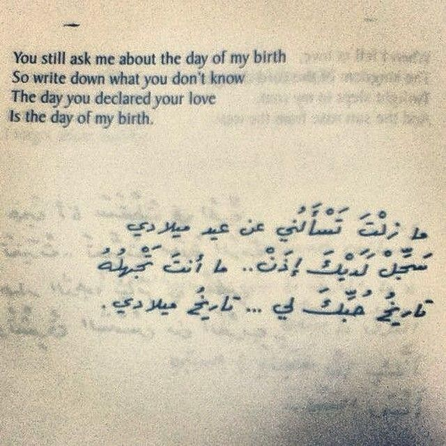

My Future Goals
In the future, I am hoping to work in cybersecurity as an analyst or expert.
This is important to me as coding and building the skills a cybersecurity expert requires is challenging, but is immensely rewarding. With many cybersecurity roles allowing work from anywhere, this also gives me an opportunity to explore and travel, maintaining a work/life balance.

My Cultural Connection
This is my home city, Hama in Syria. In the future, I want to be able to go back to visit Hama to see the Norias which are ancient waterwheels which are still functional today.
One thing I appreciate about cybersecurity is that it ironically gives me an opportunity to appreciate the world around me more, such as my cultural heritage.

Arabic Meaning to me
In the future, I want to feel more connected to my Arab culture and language, and be able to write Arabic poetry that resonates with my Syrian culture. A pillar for love poetry is the contemporary Syrian poet Nizar Qabbani.
Arabic language inspires my future, as being bilingual increases my chance in cybersecurity to connect with more people.